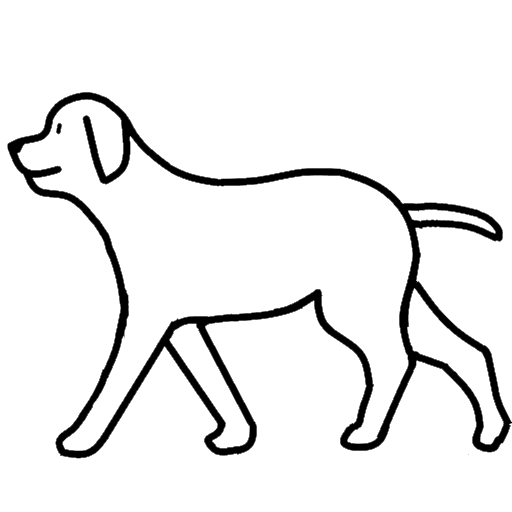

かならずお読みください→
いぬもあるけば
こどもたちがまだ3,4歳と小さかったころ、ある日いっしょに近所を散歩しました。その日の趣向は、どこに行くかはこどもたちが決めて好きなところを好きなように歩き、親はあとをついていくことになりました。
さておうちを出発して、おとなりのおうちへ。パーマ屋さんの角をまがっておみせやさんの前へ、ここでこどもたちの保育所が見えてきます。保育所の園庭を通り抜けていくと大きな公園に出ます。公園の小山を登って降りるとブランコがあり、そこでしばらくあそんでから、公園の反対側のちいさな郵便局のまえを通って、お友達のおうちの前を通って、帰ってきました。
ぐるりとまわって10分位ですが、保育所への行き来や保育所の散歩のときにでも道を覚えたようです。きっとあたまのなかにはちいさな地図もあるのでしょう。それが当時のこどもたちの「世界」でした。
わたしが小さかったころも、よく似たもので、ずいぶん昔なのによく覚えています。あの家、この坂道、あっちへいったりこっちにいったり、まちは近所のこどもたちの遊び場でした。そしてその外側のことはよくわからない。まるで「世界のはて」でした。 この文章をお読みのみなさんにも、似たような思い出の場所があると思います。
さて、歩くのが不自由だったり苦手だったりするとこの「世界」はかなり小さくなります。その昔、ある先生はこのようなこどもたちの「世界」がひろくなるように、安定して座れる特注のいす付きの電動遊具（おもちゃ）を作って自由に動きまわれるようにした取り組みを発表されました。当時は、電動車いすを使うと車いすをいやがるので、使うべきではないという意見が多かった時代の古い話です。
さらにベッド上で多くの時間を過ごしているひとの「世界」はどんなにかちいさいことでしょう。窓の外の景色をみても他の人とはちがってみえるのでしょう。事情があるのはわかりますが、なんとも気の毒なことです。
それならそれでなんとか工夫して、気分だけでも散歩を楽しむことはできないでしょうか？ そしてひとりじゃなんだから、しろいいぬもいっしょにいきましょう。 そして、どこに行くかは自分で決めるのがやっぱりいいでしょう。
以前、しろいいぬがスワイプで、正面を向いたり左や右を向いたりする試作品をご紹介しました。これは、正面と左右の３方向をスワイプで動かせるものでしたが、これに左右方向に「歩く」を追加しました。これまでの「あっちをむいたりこっちをむいたり」ではちょっと物足りなかった人は、どうぞ試してみてください。
これで合わせて５種類の動きで動かせるようになります。これまでの３種類からすこしですが、「世界」が広くなっています。どうぞお楽しみください。
生まれたばかりのときはどのこどもたちの「世界」もとても小さいのです。はじめは登場人物も場面もほんの少しだったのが、すこしづついろいろな人が登場したり、場面もあちらこちらと変わり、そのたびに少しづつ刺激をうけてきて、その中で感じ行動するなかで成長していくのだろう思います。
散歩していたら、近所のいぬに吠えられてびっくりしたり、ブランコでゆれたり、そんな刺激にあふれた体験を、誰もがみんなできるといいのですがうまくいかないこともあります。
さてこのおもちゃは、いぬといっしょにあっちにぶらぶらこっちにぶらぶらの散歩を仮想的に体験できるアプリとして作ってみました。こうしたおもちゃが、いろいろと事情のあるこどもたちの体験のためにいくらかでもお役に立てれば幸いです。
2022/07/15 公開
研究企画課リハ工学科にもどる
←もくじはこちらです